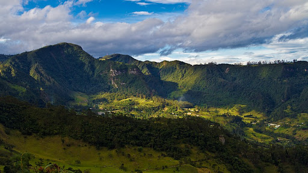
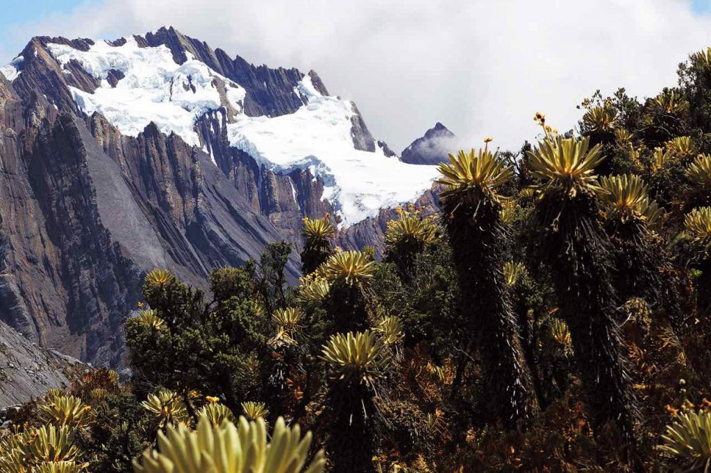
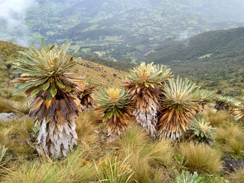
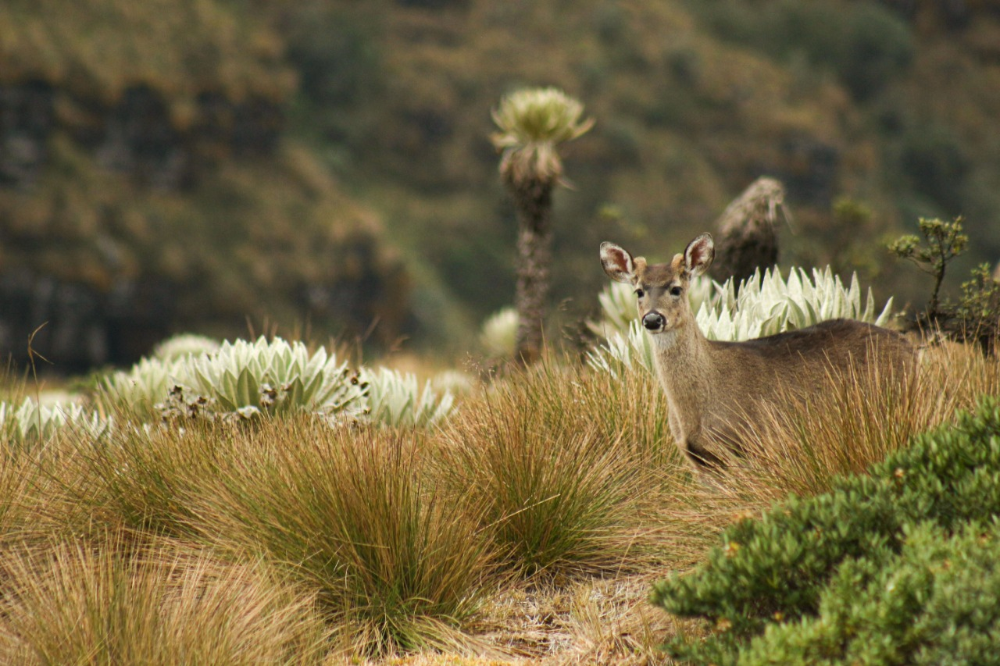
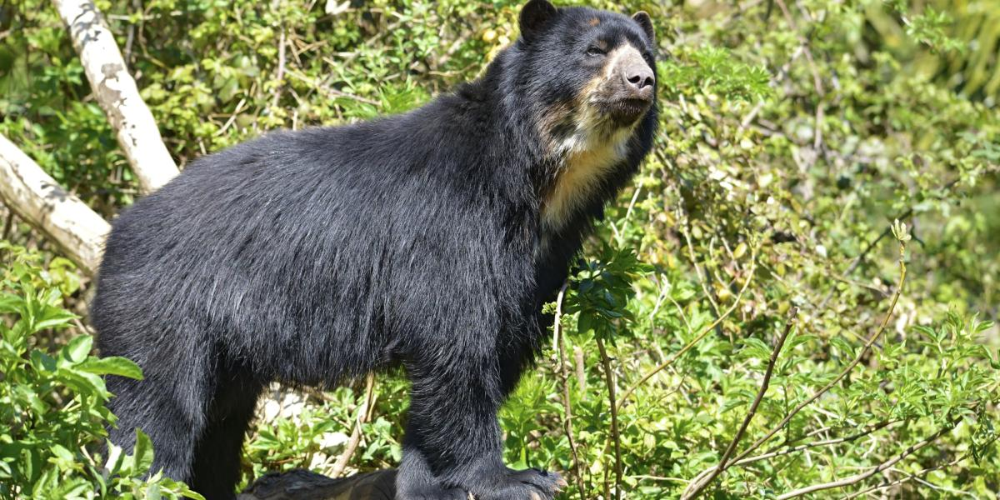
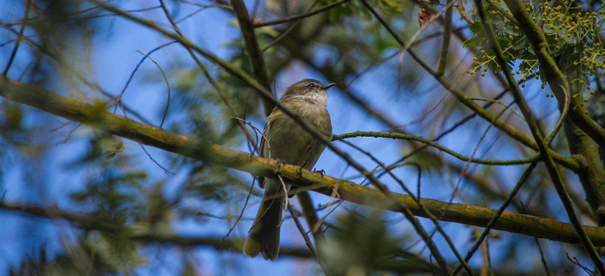

Parque Natural el Cocuy - Boyacá

Páramos de Ocetá - Boyacá

Venado de cola blanca - Cundinamarca

Etlingera elatior, también conocida como Jengibre rojo - Cundinamarca

Oso Andino - Boyacá

Gavilán Pecho Rufo - Cundinamarca
Distribución de Especies
 }})
Distribución de Plantas
 }})
| Especie | Departamento |
|---|